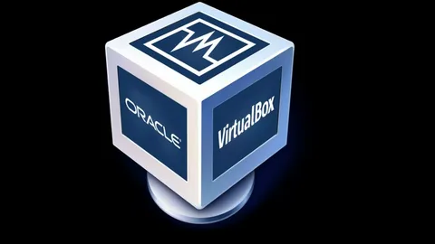
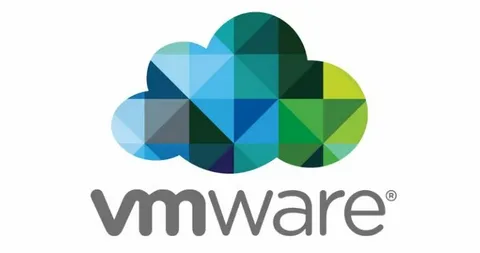

Виртуальная машина — это программная эмуляция физического компьютера, которая позволяет запускать операционные системы и приложения в изолированной среде внутри другого компьютера. Это позволяет использовать различные операционные системы на одном устройстве, не затрагивая основную систему.
VirtualBox – это специальное средство для виртуализации, позволяющее запускать операционную систему внутри другой. Оно поставляется в двух версиях – с открытым и закрытым исходным кодом. С помощью VirtualBox мы можем не только запускать ОС, но и настраивать сеть, обмениваться файлами и делать многое другое.

Mware — это американская компания, крупнейший разработчик программного обеспечения для виртуализации. Её продукты позволяют создавать виртуальные машины, имитирующие работу физических компьютеров. Это даёт возможность запускать несколько операционных систем на одном физическом сервере или рабочей станции.
